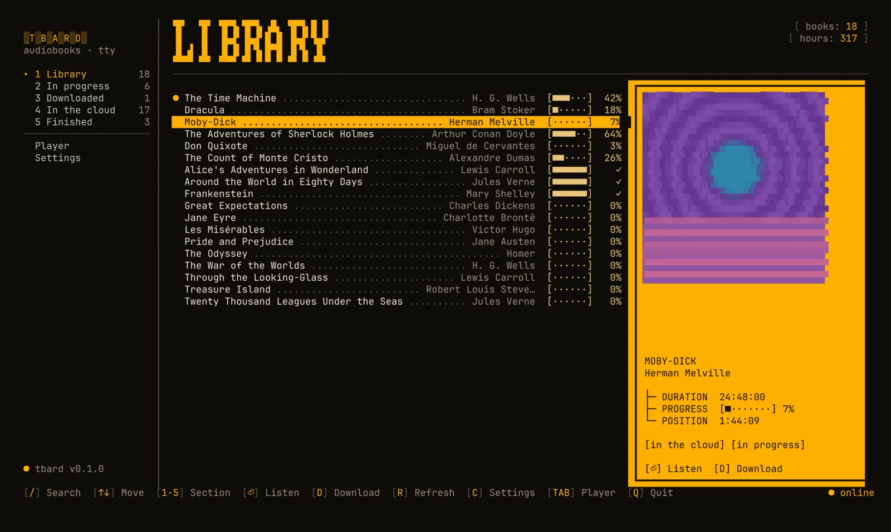
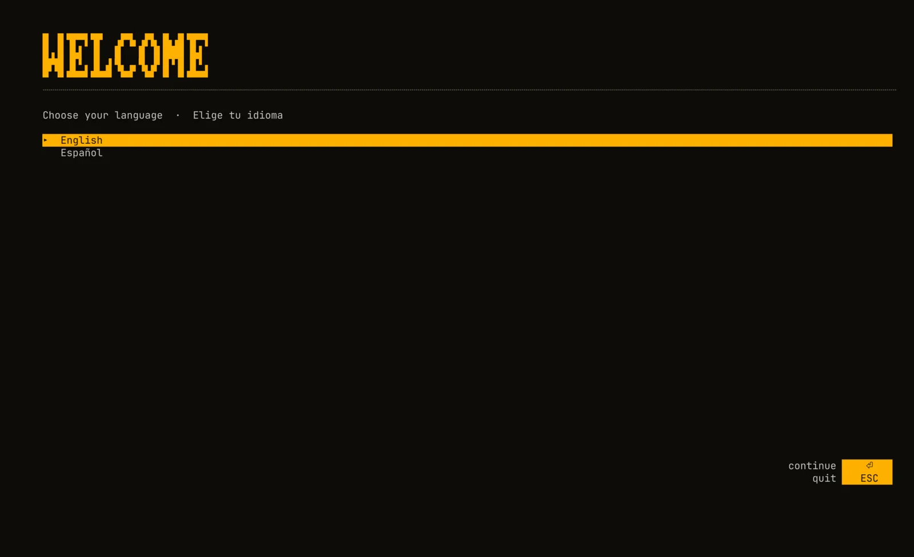
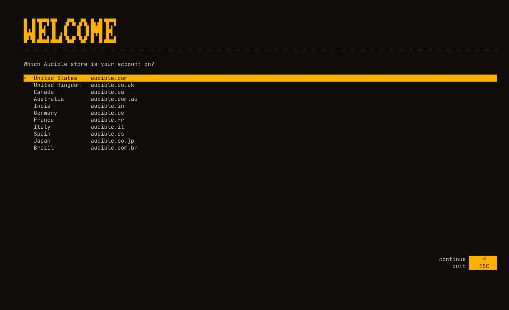
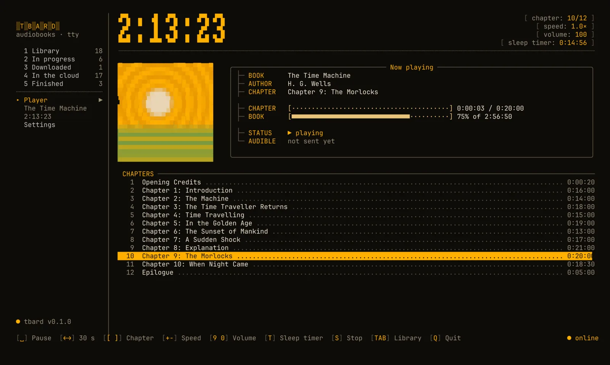
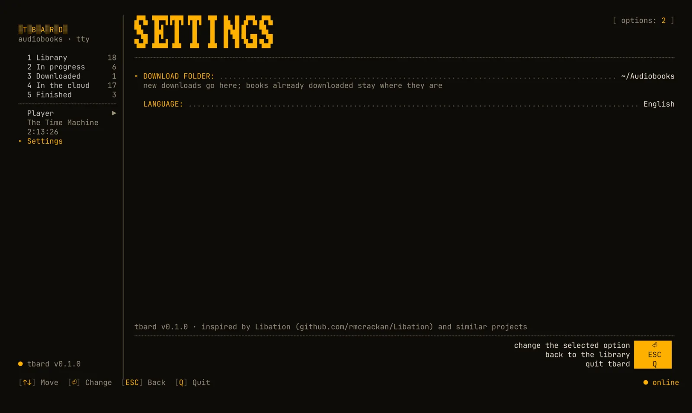

tbard
- platforms: linux · macos · windows
- languages: en · es
- telemetry: none
- license: gpl-3.0
Audiobook manager and listener for the terminal. tbard keeps your audiobook library in one place and plays it from the terminal. It connects to your Audible account to list the books you own, downloads them in the best available quality split into one file per chapter, plays them with mpv, and keeps your listening position in sync with the Audible app on your phone.

Library
Fuzzy search, sections (in progress, downloaded, finished…) and cover art in the terminal, with Kitty/Ghostty graphics or half blocks.
Downloads
The best quality Audible offers, split losslessly into one .m4b per chapter with title, track number and cover.
Player
Chapters, ±30 s, speed from 0.5× to 3×, volume and a sleep timer. Speed and volume are remembered per book.
Sync
Your position goes back and forth with the Audible app. Offline, it waits in a queue and is sent later.
Private by design
Credentials are encrypted with a key kept in your system keychain. No telemetry, nothing sent anywhere but Amazon and Audible.
Your terminal, your colors
Uses your terminal's palette, or a colors.toml that reloads live (Noctalia template included).
Disclaimer. tbard is an unofficial tool, not affiliated with Audible or Amazon. It talks to Audible's private API, which may change at any time. Use it only for books you have bought, for your personal listening. Removing DRM may be restricted where you live; you are responsible for how you use it.
Install
tbard needs mpv (playback) and ffmpeg (decryption and splitting). The package managers below install them for you.
Any distribution
curl --proto '=https' --tlsv1.2 -LsSf https://github.com/abelland-lgtm/tbard/releases/latest/download/tbard-installer.sh | shThen install mpv and ffmpeg with your package manager:
- Debian / Ubuntu
sudo apt install mpv ffmpeg - Fedora (ffmpeg from RPM Fusion)
sudo dnf install mpv ffmpeg - Arch
sudo pacman -S mpv ffmpeg
Homebrew on Linux
brew install abelland-lgtm/tap/tbardHomebrew
brew install abelland-lgtm/tap/tbardInstalls mpv and ffmpeg too. Without Homebrew:
curl --proto '=https' --tlsv1.2 -LsSf https://github.com/abelland-lgtm/tbard/releases/latest/download/tbard-installer.sh | shScoop
scoop bucket add extras; scoop bucket add abelland https://github.com/abelland-lgtm/scoop-bucket; scoop install abelland/tbardInstalls mpv and ffmpeg too. Without Scoop, use the installer and then install mpv and ffmpeg yourself:
powershell -ExecutionPolicy Bypass -c "irm https://github.com/abelland-lgtm/tbard/releases/latest/download/tbard-installer.ps1 | iex"An .msi installer is also on the releases page.
With Rust
cargo install tbard --lockedNix
nix run github:abelland-lgtm/tbardPrebuilt binaries
For every platform on the releases page.
Check the installation
tbard doctorIt shows where tbard keeps its files and whether mpv, ffmpeg and your session are ready.
Quick start
tbardThe first time, tbard asks for your language and your Audible store, opens Amazon's sign-in page in your browser and asks you to paste the address you land on. Then it opens your library.


From the command line
- login
tbard login --locale us— sign in (us, uk, ca, au, in, de, fr, it, es, jp, br) - library
tbard library— refresh and list your books - play
tbard play dune— play, downloading first if needed - download
tbard download project hail— download only - sync
tbard sync— send positions queued while offline - doctor
tbard doctor— check programs, folders and session - logout
tbard logout— remove this device from Amazon and delete the credentials
Keys

Library
- search/
- section1–5
- listen⏎
- downloadd
- refreshr
- settingsc
- playertab
- quitq
Player
- pausespace
- ±30 seconds← →
- chapter[ ]
- speed+ -
- volume9 0
- sleep timert
- stops
- librarytab
Sync
- on starttbard uses the most recent of the local and the Audible position. If both changed since the last sync and they are more than two minutes apart, it asks.
- while playingthe position is saved locally every 5 seconds and sent to Audible every 2 minutes, when you pause and when you stop.
- offlinepositions wait in a queue and are sent when the connection comes back (or with
tbard sync). - accuracychapter files line up with the Audible app to within milliseconds, so the minute you see in tbard is the one your phone shows.
Privacy
tbard stores everything in your own user folders. Nothing is shared with other users of the computer, and nothing is sent anywhere except to Amazon and Audible. There is no telemetry.
| What | Linux | macOS | Windows |
|---|---|---|---|
| Settings and theme | ~/.config/tbard | ~/Library/Application Support/tbard | %APPDATA%\tbard\config |
| Credentials and database | ~/.local/share/tbard | ~/Library/Application Support/tbard | %APPDATA%\tbard\data |
| Cover cache | ~/.cache/tbard | ~/Library/Caches/tbard | %LOCALAPPDATA%\tbard\cache |
| Log | ~/.local/state/tbard | ~/Library/Application Support/tbard/logs | %LOCALAPPDATA%\tbard\data\logs |
| Audiobooks | ~/Audiobooks | ~/Audiobooks | %USERPROFILE%\Audiobooks |
Credentials
Signing in registers tbard as a device on your Amazon account, like a phone with the Audible app. Its tokens
and private key are saved encrypted (AES-256-GCM) in credentials.enc; the key lives in your
system keychain (macOS Keychain, Windows Credential Manager, GNOME Keyring or KWallet). A copy of the file is
useless on another machine or account.
Permissions
On Linux and macOS the folders are created 0700 and private files 0600. On Windows they
live in your user profile. Logs never contain tokens or download links.
No keychain?
On a machine without one (a server, a minimal desktop) tbard stores credentials.json unencrypted,
readable only by you, and tells you so.
Removing everything
Run tbard logout: it removes the device from your Amazon account and deletes the credentials and
the keychain entry. Then delete the folders above.
Configuration
config.toml lives in the settings folder. The settings screen (c) writes it for you.
library_dir = "~/Audiobooks" # where new downloads go
language = "en" # "en" or "es"
mpv_path = "/opt/mpv/bin/mpv" # only if mpv is not on PATH
ffmpeg_path = "C:\\tools\\ffmpeg.exe"Colors
tbard uses your terminal's colors. To change them, create colors.toml next to
config.toml; tbard reloads it while running. With
Noctalia, the included template generates it from
your wallpaper.
primary = "#ffb000"
on_primary = "#1a1200"
secondary = "#e8c37a"
tertiary = "#ff7a45"
error = "#ff5f56"
on_surface_variant = "#9b8f7a"
outline = "#5b5142"
Nix and home-manager
inputs.tbard.url = "github:abelland-lgtm/tbard";
imports = [ inputs.tbard.homeManagerModules.default ];
programs.tbard.enable = true;Troubleshooting
“mpv was not found” or “ffmpeg was not found”
Install them (see Install) or set mpv_path / ffmpeg_path
in config.toml. tbard doctor shows what it finds.
The sign-in page did not open
The login screen also shows the URL: open it yourself, sign in, and paste the final address (it starts
with https://www.amazon…/ap/maplanding).
“no system keychain”
Install and unlock a Secret Service provider (GNOME Keyring or KWallet) and sign in again. Until then the credentials are kept unencrypted, readable only by you.
Covers look blocky
Your terminal has no graphics protocol, so tbard draws covers with half blocks. Kitty, Ghostty, WezTerm and iTerm2 show real images.
The position did not reach my phone
Without a connection positions wait in a queue. Run tbard sync, then reopen the Audible app.
The log (see Privacy) says what happened; run with TBARD_LOG=debug for
more detail.
Anything else: open an issue.
Inspiration
tbard is inspired by Libation and similar projects. It brings Libation's idea of a personal, DRM-free audiobook library to the terminal, together with a player and position sync.
- Libationthe main inspiration: a desktop app that backs up your Audible library as DRM-free files.
- audible-cliand the audible library, whose work documenting Audible's API made projects like this possible.
- Toutuia terminal audiobook player that inspired tbard's player.
- mpv · ffmpegthe playback and audio work.
tbard is an independent implementation and contains no code from these projects.